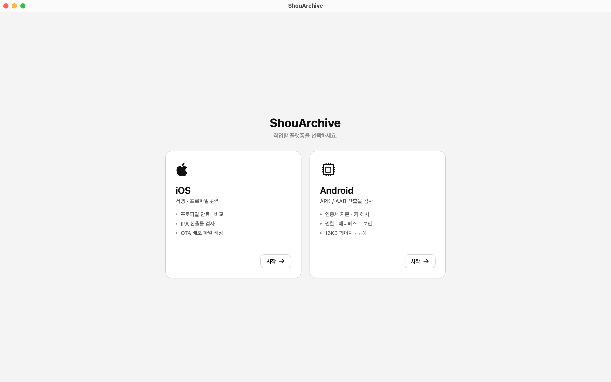
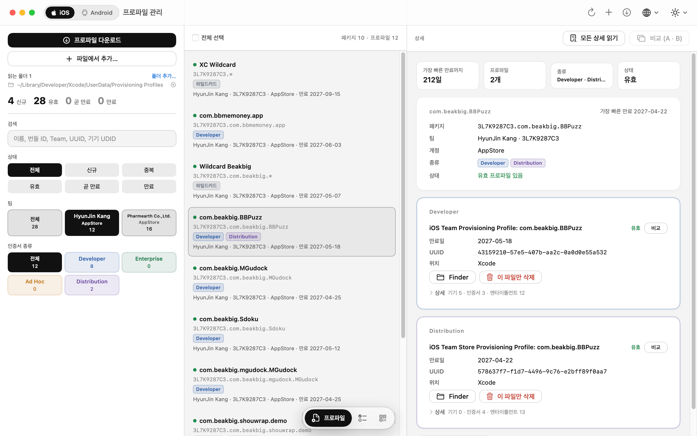
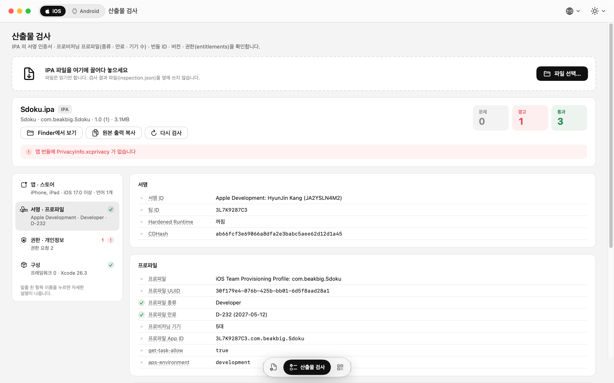
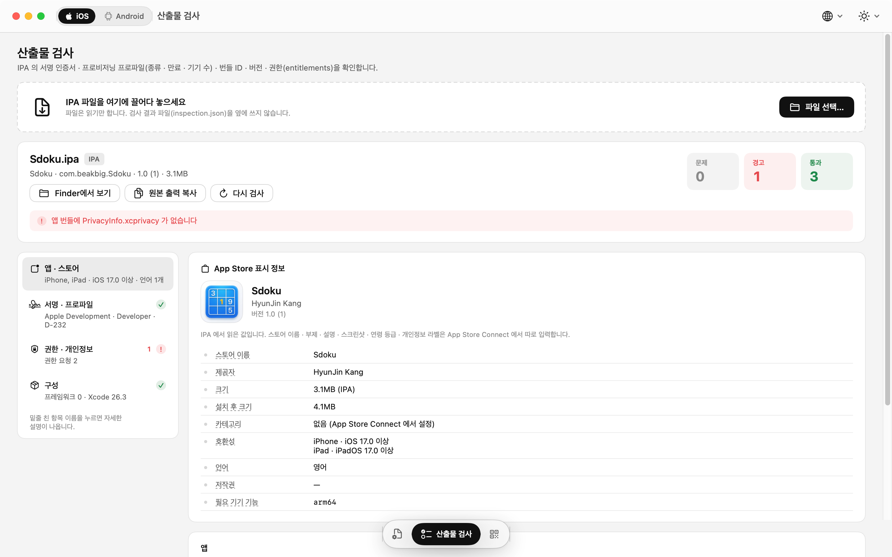
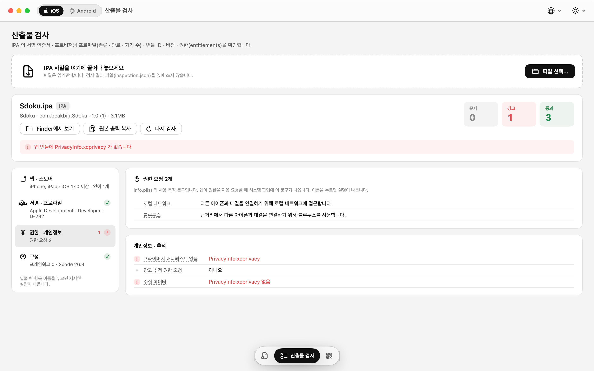
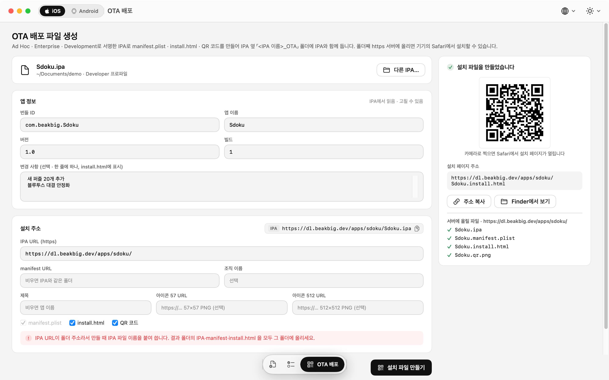
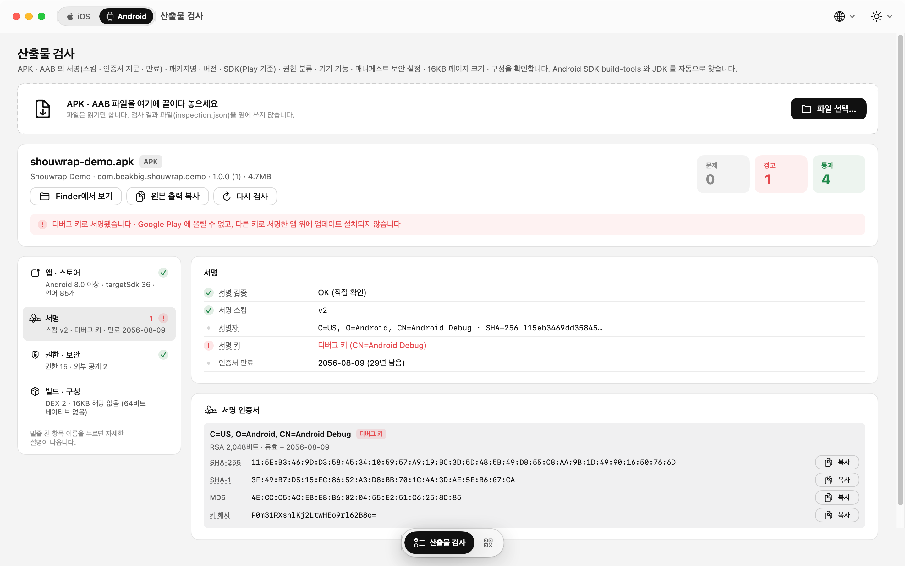
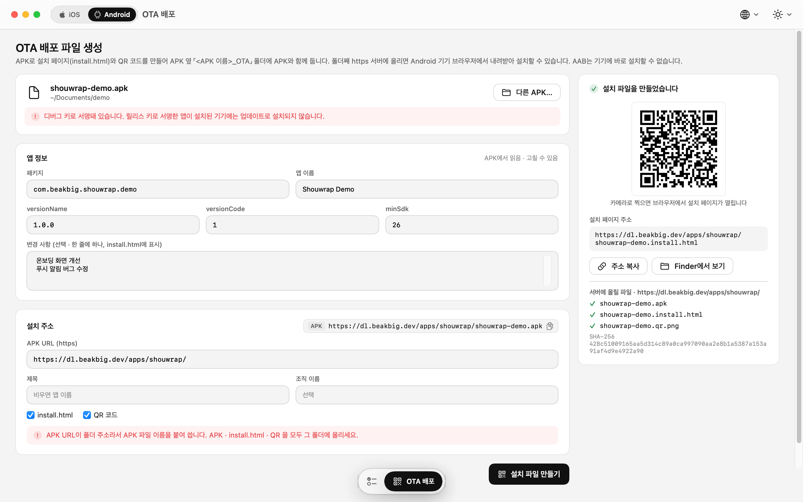

설치된 프로파일
- 목록마다 D-N 만료 배지 — 30일 안에 만료되는 것은 주황, 만료된 것은 빨강
- 필터: 전체 · 신규 · 중복 / 유효 · 곧 만료 · 만료
- 상세: 기기 UDID · 들어 있는 인증서(SHA-1 · SHA-256) · Entitlements, 항목별 복사
- 두 프로파일을 나란히 비교 — 기기 · 인증서 · Entitlements 차이
.mobileprovision을 끌어다 놓아 추가, 여러 개 골라 삭제
프로파일 관리 · 산출물 검사 · OTA 배포 파일 — 배포 직전에 확인할 것들을 한 앱에서.
IPA · APK · AAB 를 열어 스토어에 보일 정보와 서명 · 권한을 바로 확인하고, 프로비저닝 프로파일을 만료일과 함께 관리하고, 테스트 배포용 OTA 설치 파일까지 만듭니다. 파일은 Mac 안에서만 읽습니다.
macOS 14 Sonoma 이상 · Apple Silicon · Intel
프로파일
Xcode 가 설치한 프로파일을 한눈에 보고, App Store Connect API 키가 있으면 내려받기 · 만들기 · 갱신까지 앱 안에서 끝냅니다.
.mobileprovision 을 끌어다 놓아 추가, 여러 개 골라 삭제Issuer ID · Key ID · .p8 만 씁니다. 키 파일은 Mac 에 그대로 두고, 요청 토큰은 로컬에서 서명합니다.
산출물 검사
파일을 끌어다 놓으면 외부 도구 없이 바로 분석합니다. 스토어에 보일 정보부터 서명 · 권한 · 보안 설정까지, 항목마다 설명이 붙어 있어 처음 보는 값도 그 자리에서 이해할 수 있습니다.
제품 페이지에 보일 값 중 산출물에서 읽을 수 있는 것을 미리 보여 줍니다.
…UsageDescription) — 비어 있으면 경고읽기 전용입니다. 파일을 바꾸지 않고, 옆에 아무것도 쓰지 않으며, 어디에도 올리지 않습니다.
OTA 배포
이미 만든 IPA · APK 로 설치 페이지와 QR 을 만듭니다. 만든 파일을 https 서버에 올리기만 하면 됩니다.
manifest.plist · install.html · QR (itms-services:// 설치 링크)install.html: 아이콘 · 버전 · SHA-256 · 설치 안내 · 변경 사항화면
라이트 · 다크 · 시스템 테마, 텍스트 크기 85 – 150 %. 화면 아래 아이콘 메뉴로 탭을 오갑니다.








요구 사항